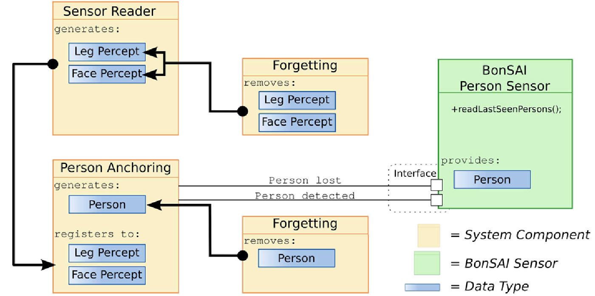
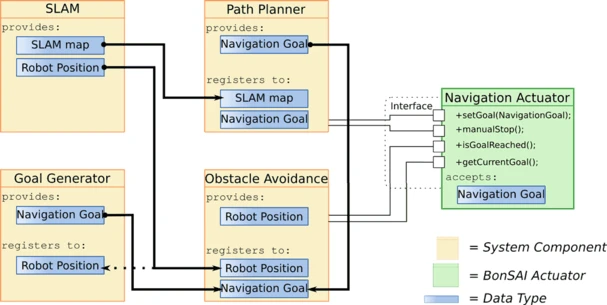

Sensors and Actuators
The Bonsai sensors and actuators allow for abstraction of system software components and middleware. They serve as an interface between hardware or software components to be used to model a system action and/or additional information while concealing the underlying generation and communication process. They encapsulate complex interactions between these components and improve the readability, reproducibility, and efficiency of robot behavior code.
Each sensor and actuator implementation has to implement a configure and a cleanup function:
void configure(IObjectConfigurator conf) throws ConfigurationException;
/**
* Close all communication channels.
*/
void cleanUp() throws IOException;
The configure function is being called before everything else within the class. This function receives a configurator which contains options for the actuator/sensor that are defined in the Bonsai configurations.
In order to better explain the concept of sensors and actuators, we will explain with an example behavior “Follow Person”, which should detect and follow a person.
Sensor
“A sensor within the Bonsai framework is the concept of reading information from a single modularity relevant to the current system, generated by either a hardware or software component or a combination of both, to be used to model a system action and/or additional information and concealing the underlying generation and communication process.”
A Bonsai sensor returns information from the outside world. It can be a simple abstraction of a hardware part of the robot, such as camera or laser sensors. A bonsai sensor can also be more abstract. For example, there can be a person sensor based on different software components, which detects people in the robot’s vicinity.
The following image shows an example for a Bonsai person sensor:
The goal of the sensor depicted in this image is to provide information about a person in the robot’s vicinity. The Follow Person behavior would only need to call the readLastSeenPerson() function which provides data about the person and its location. Internally, the person sensor is realized by four different software components that manage the detection and tracking of a person over time.
The code for the robot behavior is completely detached from the robots sensors and the person detection modules. It only needs to call the person sensor and it will receive all necessary information.
Actuator
“An actuator within the Bonsai framework is the concept of committing singular information available to the current system to a certain hard- or software component or subsystem to generate concrete action of a particular component/subsystem and concealing the underlying communication process.”
The actuator is used to abstract and detach system software components and middleware. The navigation actuator is a typical example for this. It should provide basic functions for navigating a robot, e.g. via a setGoal() method. This simple interface then triggers a complex interaction between different software components.
Assuming we have a skill which converts person data into a navigation goal, we can use navigation actuator example shown below:
The navigation actuator handles localization, path planning, obstacle avoidance, and goal generation. The navigation actuator thus completely detaches the code for robot behavior from the systems software components and the middleware.
Interfaces
When using multiple robots with different hardware components, it can be quite a hassle to adapt the robot behavior to the other robots.
In order to detach the robot behavior model with the hardware, we make use of Interface classes in Java. They enable implementation of different Sensors and Actuators and making them configurable while the skills and the robot behavior model remains completely oblivious and only know of the sensor and actuator interface classes.
Each Actuator and Sensor is required to inherit from a Java interface class. This interface describes the functions which each subclass must implement. This is to make sure that e.g. each grasp actuator implements the graspObject() function or that each navigation actuator has the setGoal() function, whether it may be an Actuator implemented for a TIAGo robot or a Pepper robot.
With a robot with different hardware and software components, you would only need to reimplement actuators while the robot behavior control can remain unchanged.
For example, we create the interface GraspActuator which has the function graspObject().
You want to deploy it on a TIAGo robot with a 7DoF arm which uses MoveIt for motion planning, thus you might create a TIAGoGraspActuator which inherits from the GraspActuator.
Now you want the deploy the robot behavior on a Pepper robot and the arm motion is trained using reinforcement learning, for this you would simply create a PepperGraspActuator.
All the skill has to know is, that it uses the GraspActuator. It doesn’t care about which actual implementation is being used at the end.
Using interfaces also enable the possibility to utilize various methods for motion planning.
You could implement a TIAGoMoveItGraspActuator which uses a MoveIt to plan the grasping motion, or a TIAGoDLGraspActuator which tries to employ Deep Learning methods for grasping.
Note
Interface classes are stored in the subpackage
bonsai_interfaces.Which interface implementation to use (for the actuator) is defined in the Bonsai configuration.
Factory Classes
Factory classes can be used to configure Sensors, Actuators, and the internal memory. The factory class checks if the configuration is correct and configures the sensors and actuators.
Bonsai already implements Adapter classes for ROS.
The RosFactory class creates ROS nodes for sensors, actuators, and coordinate transforms.
The RosFactory will check if a ros master node has been started.
It starts ROS nodes for each sensor, actuator, and coordinate transform and creates the respective Bonsai interface for skills to use.
Another factory class is the MemoryFactory which creates Memory Slot instances.
Note
Factory classes also need to be configured in the Bonsai configuration.
Actuator and Sensor configurator
Actuators and Sensors take an ObjectConfigurator object when its configure function is being called.
Using the configurator, the Actuator or Sensor can request parameters from the Bonsai configuration file.
Within the configure() function, options defined in the configuration file can be requested using the key specified in Option tag in the configuration file.
public class ExampleActuator implements AbstractExampleActuator {
private static final String KEY_TOPIC = "topic";
private static final String KEY_INT = "optional_int";
private String topic;
private int optionalInt = 0;
@Override
public void configure(IObjectConfigurator conf) {
this.topic = conf.requestValue(KEY_TOPIC);
this.optionalInt = conf.requestOptionalInt(KEY_INT, optionalInt);
}
// ...
}
From the configurator you can request (optional) parameters of type String, Int, Double, and Bool. The Actuator wants to request two options from the configuration, topic and optional_int.
The Actuator configuration could look like this:
<!-- ACTUATORS -->
<Actuator key="Example1"
factoryClass="ExampleFactoryClass"
actuatorInterface="AbstractExampleActuator"
actuatorClass="ExampleActuator">
<Options>
<Option key="topic">/example</Option>
<Option key="optional_int">1</Option>
</Options>
</Actuator>
The ExampleActuator requests a parameter with the key “topic”.
Inside the Bonsai configuration within the section where we configure our Actuator we define the parameter with the option tag with key “topic” as “/example”.
Thus, the requested parameter that our Actuator gets is “/example”.
Function |
Explanation |
|---|---|
requestValue(String key) |
From the Bonsai configuration, request the option
with key and cast it to a String
|
requestOptionalValue(String key, String default) |
From the Bonsai configuration, request the option
with key and cast it to a String. If the option
has not been declared in the configuration file,
then use the default value. The getOptional
functions are also available for the other types below.
|
requestInt(String key)
requestOptionalInt(String key, int default)
|
From the Bonsai configuration, request the option
with key and cast it to an int
|
requestDouble(String key)
requestOptionalDouble(String key, double default)
|
From the Bonsai configuration, request the option
with key and cast it to a double
|
requestBoolean(String key)
requestOptionalBoolean(String key, boolean default)
|
From the Bonsai configuration, request the option
with key and cast it to Boolean
|
The bonsai configuration for the actuator could look like this:
The sensor class would look like the actuator example here.